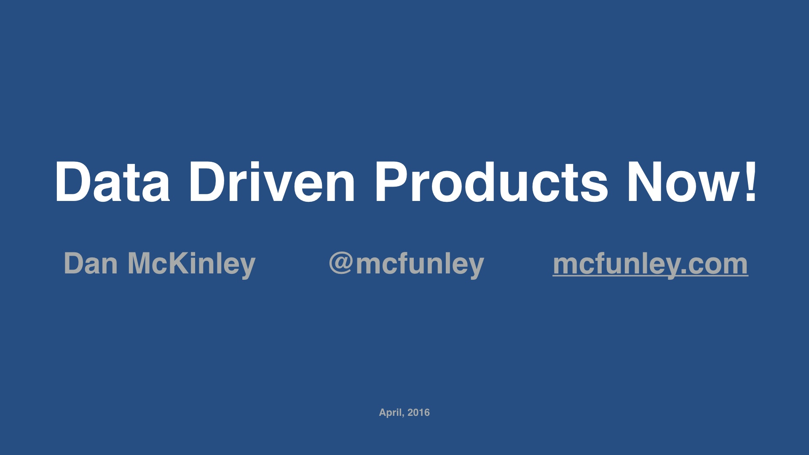
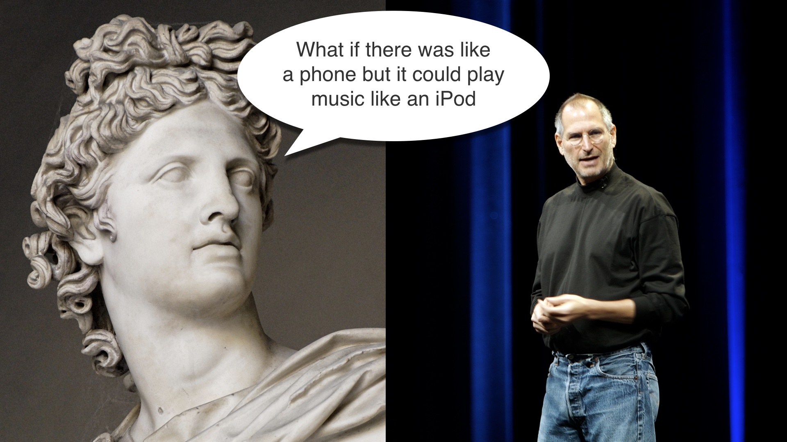

|  | |
| So hey | |
| My name’s Dan McKinley. I’m a general purpose … web … person. | |
| I got my start in the financial industry back in the early 2000’s. I did that for a few years and then I freaked out and wound up at a startup called Etsy, in Brooklyn. That was back in 2007. I left Etsy in 2014 and have done several things since. | |
| Anyway pretty much the whole talk will be about my time at Etsy. I still think Etsy is awesome. I had a great time there and I’m not done talking about it. That time left a mark, you could say. | |

|
I’ll tell you a few things about Etsy. Etsy’s a marketplace for handmade and vintage goods, and it’s pretty big. |
| But back when I started in 2007, it was tiny. Less than 20 people. | |
| That journey was a wild ride. It was tumultuous. There were three CEO changes while I was there. There was plenty of arguing about plenty of things. | |

|
And the most contentious issue of all had to be this. What should we spend our time doing? I’m sure this is a hot topic at most companies. Well it was at Etsy too. |
| I’d say at all points, this was more or less the company line. We should be data driven. Someone heard that Google was data driven, and we wanted to be like Google. So we should be data driven. There was one problem with this. | |
|
And that was that nobody knew what that meant, or what it would imply. Usually, you’d get this. If you wanted to get a project approved, you’d dress it up in data. You’d sprinkle some numbers on it and wave a dead chicken at it to show you were being data driven. It was display behavior. |
|
|
But eventually I think I started to figure some of this out. I started to figure out what it would mean to be data driven while you’re picking priorities. And I also realized that it’s not that complicated. That’s what this talk is about. |
|
| I want to go through the story of how I figured some of this out in more detail. | |
| And that story starts back in 2007. | |
| Etsy in its early days was a magical place. I would not want anyone to get the wrong impression here and think I’m talking smack about Etsy in the early days. It was awesome. I miss 2007 all the time. | |
|
But I think it’s also important to be honest. Etsy grew geometrically because it was a thing that was out there waiting to be discovered. It didn’t grow that way because of carefully planned product and marketing efforts. Sure, there was agency in the creation of the site. And people worked hard. But the massive growth that happened wasn’t strongly connected to the actions of employees. This is utterly obvious to those of us that were there. |
|
|
But few of us, as human beings, are hardwired to see things that way. Instead we all tend to think that if your work takes off, it means you’re smart and your actions are good. We assume that the methods that precede success caused it, and they’re good methods. |
|

|
And we didn’t really question ourselves. We created a thing and people love it. And we believed that to be a repeatable process. |
| If you build it, they will come, in other words. | |
|
And you know what, if the site’s growth is really insane, it looks like it’s working. You can release things and as long as they don’t completely destroy everything it will look like you’re a genius. All the graphs will go up and to the right. And that’s awesome for as long as you don’t think about it too hard. |
|
| But of course we went and ruined all of that by thinking about it too hard. | |
|
A thing I noticed (and I’m sure I wasn’t the only person to notice this) was that we had been consistently deleting features after a while because nobody wound up using them. We’d release a feature, and a year or two later it would need maintenance or become a support headache. At that point we’d look to see if anyone was using it, and pretty often the answer would be “no.” So we’d just kill the thing. |
|
|
A good example of that is a feature called Alchemy. This was a feature that let you describe an item you wanted, and then have Etsy shop owners bid on making it for you. That’s a neat idea, and it was in the New York times a few times and was generally considered awesome when it came out back in 2008. |
|
|
But then we took it down for good in 2011. I looked into it at the time, and I think the statistic was that in three years Alchemy sold about as many items as the rest of the site sells in less than a day. It was a giant bust. Around that time I started wondering if there was some way I could avoid participating in projects like alchemy that were just going to be taken down. |
|
| Around the same time we started A/B testing things in earnest. And I latched onto that as a possible solution. Instead of pushing things out to everyone all at once we’d do a split test and try to get a quantitative measure of how we were doing. | |
|
The thing that A/B testing revealed right away was: holy crap! We’ve been delusional about our abilities up to this point. A huge percentage of products that we tested either had no effect, or made things worse. Usually only slightly worse, but still. And we certainly weren’t moving the needle in the right direction the way we expected. |
|
| At this point our problem seemed to be that we were still picking projects based on which one sounded the best. | |
| BUT the way we decided whether or not things were working after the fact had changed. We were evaluating our results with A/B testing. And that turned out to be really important. | |
|
Once we were looking at how we were really performing when we were releasing products, we’d opened Pandora’s box. I won’t tell you that nobody advocated just ignoring this problem and going back to not doing any A/B testing. This was a point of view with some support. But it would have been a disingenuous thing to do, and it wasn’t in the majority. |
|

|
Our batting average with products was terrible. But over time I did figure out a way to get slightly better at this. |
| Back at the beginning we started with this. We’d have an idea, we’d code it, and then we’d push it out. | |
| Then in 2010 we tacked this A/B testing step on to the end. | |
| But that was blowing up in our faces and pretty often it really looked more like this. We’d have to spend a lot more time in testing than we’d planned on, because our metrics got worse. | |
| And occasionally we couldn’t resolve that, and we might not even release stuff. | |
|
But around 2012 I settled into a process that looked more like this. It’s a little more complicated, but it worked a lot better. The premise of this is basically, “hey, maybe we should incorporate data earlier on in the process.” |
|
| The notable feature here is an explicit step at the beginning where I try to validate ideas using data before doing anything else. I’m going to spend most of the rest of the talk discussing this. | |
| The other thing I started trying to do in earnest was to avoid over-committing. We’d explicitly try to build extremely minimal versions of things and A/B test with those. | |
| If a project survived the first round of A/B tests, you would go back and apply some polish to it. | |
| The nice thing about this process is that it gives me at least two relatively inexpensive places where I can decide to give up on a project that isn’t working. Of course I still have the option of scrapping it at the very end, but I’m less likely have to exercise that. | |
| Instead of just leaving you with that abstract stuff, I’ll go through a couple of examples of doing the validation on a potential project. | |
|
I’ll go through two ideas, they’re both real things that came up at some point. I think they both sound like pretty good ideas when you first hear them. And early on that would have been enough for someone to work on them. |
|
| The first idea I’ll go through is building a landing page for furniture that’s local to the visitor. | |
|
The general idea would be: Etsy already has these landing pages for all of its categories. Furniture is pretty hard to buy on the internet, because shipping it is difficult. Maybe we could improve the experience by making the pages show items that are geographically close to the visitor. |
|
| The first thing to assess is how large the audience for this is, and what their behavior is like. | |
|
So I’d start by looking at the overall fraction of page views that are on the page we’d be talking about changing. And in this case, these pages have quite a bit of traffic. It’s not the most important page, but it’s something. |
|
| And of course not all of those pageviews are for furniture, but a decent amount of them are. So far so good. | |
|
Going one step further would be to see how many people buy things that they first encountered on each of these pages. And that looks like this. If you do that the project looks a little less attractive, because these pages really don’t sell many items. That doesn’t necessarily mean that the browse pages are bad. It’s probably just that the traffic on those pages tends to be pretty removed from the purchasing decision. Compare that to the search page, which is disproportional in the other direction. Once you’ve gone to the trouble of typing a search, you’re a lot more likely to be in buying mode. |
|
|
But, hold on a second. Furniture is very expensive. So maybe this is still worth digging into. Sure, we won’t sell a lot of items total, but the ones we do sell will cost a lot more. If the average order on Etsy is $40—which by the way it’s not, I am making up financial details in this talk—let’s guess that the average order we’ll create will be ten times that. Let’s guess $400. |
|
|
From there, we can start to answer what changing the state of the world would imply. |
|
| You get a formula like this. We have a certain number of visitors to the site, some percentage of them convert into purchases, and each purchase is worth some average amount. And then we multiply that by how much we’re going to improve matters. | |
|
I just talked through estimating the first three terms. Now we’re going to take some wild guesses at the fourth. |
|
|
And if you do that with this project, it looks like this. I’ve picked a half percent through a two percent increase in sales, which based on our past experience might be even a little nuts. A 2% increase in conversions on a page like this would be relatively unheard of. |
|
| But let’s say we really hit it out of the park and managed a 2% increase. | |
| That would mean Etsy would sell about $360,000 more over the course of a year. | |
|
There’s one thing to consider here, which is that Etsy doesn’t keep all of the money when an item sells. Etsy only takes 3.5% of the purchase price as a fee. So if we include that it adds some additional context. The net benefit to Etsy for this feature starts to look pretty bad. If two engineers work on this for a month and they have a designer half of the time, then this feature would take a long time to earn back their salaries. Not to mention HR overhead, managerial overhead, the incremental electricity required to run the feature, etc. |
|

|
I think in this case it’s clear that we should spend time on something else. And the work I did to determine this only took me about an afternoon. I didn’t waste a month of my life on that so I count that as a victory. In the past we probably would have just done this project without thinking about it. |
| Let’s go through another example. This time we’ll model sending emails to people. | |
|
Like most e-commerce sites Etsy has a cart with a couple of steps. You add something to your cart, you fill out your credit card and shipping address, and so on. People can quit at any step along the way. The idea here would be to wait five days and then send people an email asking if they really meant to buy that thing they started buying. |
|
| The equation in this case looks a little different. We have some set of people who are eligible each day. They have an average value of stuff in their carts. And we hope to reactivate some of them. | |
|
So if there are about 20,000 people eligible for this email every day, and their average purchase is $40, our model looks like this. I plugged in some guesses for how many people would complete the purchase, starting at 1% on the lower end. |
|
| I think 1% is a reasonable guess because these people are already really far down the checkout funnel. | |
| On the low end of things, we’d sell $8,000 more per day, or $3MM over a year. | |
| Again we have to relate that to how much the company actually makes. And this time around it still looks small on our graph, but in absolute terms it’s way better: about $100K per year in revenue. | |
| In this case our exploration found a project that looks like it’s worth doing. | |
| I actually built that feature while I was at Etsy. It wound up being between a half and one percent of total sales. That might not sound like a lot, but remember that huge percentage gains are really hard to come by. This was a really big deal, as far as these things go. | |
|
So I hope you can see that even crude arithmetic can make one project look like a turkey and another worth doing, when they both sound cool without the arithmetic. |
|
| If I can extrapolate for a few minutes, | |
|
The metaphor that I have in my head when I think about this kind of project validation is Archimedes with his lever. (Not to be grandiose or anything.) Archimedes said that given a place to stand, he could move the Earth. Picking products based on data is "finding your place to stand” before you apply your effort. |
|

|
Your ability to move the needle is a function of who the audience, is and how big it is. In the furniture landing page example I gave you there were many people, but they weren’t very likely to buy. That made it an unattractive project. |
|
Remember we’re making educated guesses when we prioritize. Just getting to within an order of magnitude of the right answer is your goal. Without doing, this your hunches are unlikely to even be that accurate. |
|
|
I don’t want to come across as saying this is the one true way to choose projects. I do not believe that this method is always practical or appropriate. |
|
|
If your company is brand new, you won’t have your own data, so you can’t do exactly what I’ve said. As a small company you can be proactive and make sure you’re collecting data, and you can also try to use data from other sources. More mature companies should have tons of data and could theoretically follow this vetting procedure for every project. But even then that’s probably still not what you should do. If you’re a big company, you should still be gambling sometimes. |
|
| So I’d like to leave you with just a couple of thoughts. | |
|
I set out on this journey to make better decisions about what to build. Now I tend to think that if somebody thinks they know what to build with certainty, but can’t show you their work, they’re kidding themselves. |
|
|  |
A popular reaction to this stance is something along the lines of, “you can’t like, quantify vision, man.” People like to imagine that certain individuals have a direct line to divine Apollo, and that they can reliably come up with winning ideas. Maybe that’s true. |
|
But you can quantify vision. When you’re trying to draw a bounding box around a non-incremental change, you’ll have a larger margin of error. But mathematics still applies to you! Mathematics is the language we use to describe reality. If your product changes are presumed to have an effect in reality, that effect can be estimated with mathematics. |
|
|
As I’ve tried to demonstrate, a lot of product ideas sound awesome. I think that “sounding awesome” is a completely unremarkable feature of a product idea. |
|
|
I think that it’s pretty common, if you’re not in management anyway, to assume that people are doing this work for you. That was certainly my assumption when I started my career. But in my experience people are not doing anything like this. You should ask about it. You should do it yourself. You should build tools to make doing it easier. |
|
| I've met so many people in my career that "just want to build cool stuff." That’s what I want too! But I’ve expanded my definition of “cool stuff” so that it encompasses some notion of having an impact. | |
| This is how you have an impact. |